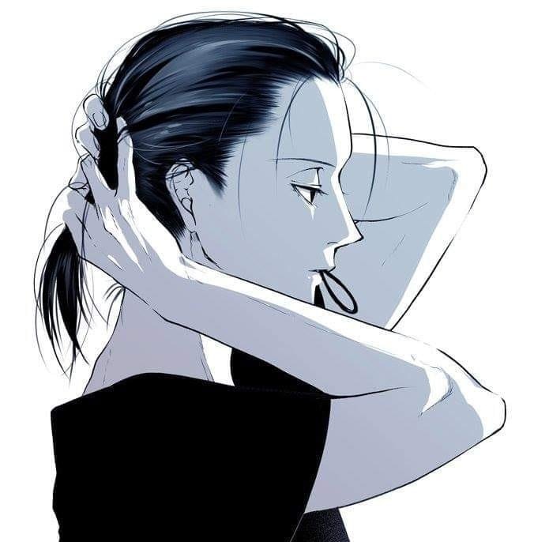

ĐỖ THỊ HUYỀN
[crush đéo thích tôi]
- Tình cảm của tôi như quán nhậu đắt hàng.
- Hết lòng à?
- Không, hết dồi.
GIỚI THIỆU
Nickname: Bảo Bảo
Facebook: Bảo Bảo
Email: huyenjy@gmail.com
Address: Sao Hỏa
NHỮNG KẺ RỖNG TUẾCH
- Thomas Stearns Eliot -
Ngài Kurtz đã chết
Xin một hào cho Guy già
I
Ta là những người trống rỗng
Ta là những hình nộm
Ta cúi xuống cùng nhau
Rơm xào xạc trên đầu
Giọng ta khô, nức nở
Khi cùng nhau to nhỏ
Lặng lẽ và hững hờ
Như gió trong cỏ khô
Như chuột trên kính vỡ
Trong hầm rượu cạn khô.
Hình thiếu nét, bóng thiếu màu
Sức lực đờ ra, cử chỉ không cử động
Những đôi mắt của ai nhìn thẳng
Từ Vương quốc cái chết khác đang nhìn
Nhắc ta, không như những kẻ vô hồn
Những tâm hồn sôi động, nhưng
Chỉ như những người trống rỗng
Như những hình nộm bằng rơm.
II
Những đôi mắt tôi sợ gặp trong mơ
Nhưng trong vương quốc mơ màng cái chết
Những đôi mắt không có bao giờ
Những đôi mắt này
Trên cột gãy là ánh mặt trời
Là cành cây nhún nhảy
Và giọng nói
Trong ngọn gió hát lên
Xa cách và trang nghiêm
Hơn những ngôi sao dần tắt.
Hãy cho tôi đến gần
Vương quốc mơ màng cái chết
Hãy cho tôi được mặc
Quần áo cải trang
áo khoác của chuột, lông của quạ khoang
Đứng trên đồi như ngọn gió
Gió đi đâu, tôi đi đó
Nhưng đừng để đến gần –
Lần cuối cùng gặp gỡ
Trong vương quốc của hoàng hôn.
III
Đấy là quê hương cái chết
Đấy là xứ sở của xương rồng
Nơi này những pho tượng đá
Và những cánh tay vật vã
Của những người chết van xin
Trong ánh sáng của ngôi sao tắt dần.
Có phải vậy chăng
Trong vương quốc cái chết khác
Khi thức dậy một mình
Và trong giờ khắc
Ta run lên với sự dịu dàng
Những bờ môi chờ hôn môi khác
Và nguyện cầu cho đá vỡ tan.
IV
Những đôi mắt không ở đây
Những đôi mắt không có ở nơi này
Trong thung lũng những ngôi sao đã chết
Trong thung lũng này rỗng tuyếch
Đã gãy quai hàm những vương quốc đã mất của ta
ở nơi của lần gặp gỡ cuối cùng
Ta cùng nhau mò mẫm
Và nói năng cùng nhau ta tránh
Trên bờ sông có dòng nước sưng lên
Không nhìn ra cho đến một khi mà
Những đôi mắt chưa hiện
Như ngôi sao muôn đời tỏa sáng
Như muôn ngàn cánh hoa hồng
Của vương quốc cái chết hoàng hôn
Và chỉ đấy là niềm hy vọng
Dành cho những người trống rỗng.
V
Ta đi vòng quanh những bụi cây gai
Những bụi cây gai những bụi cây gai
Ta đi vòng quanh những bụi cây gai
Vào lúc năm giờ sáng.
Giữa ý tưởng
Và hiện thực cuộc đời
Giữa ý muốn
Và hành động con người
Chiếc bóng kia đổ xuống
Bởi Vương quốc là Ngài
Giữa quan niệm
Và sự dựng xây
Giữa mối xúc động
Và câu trả lời
Chiếc bóng kia đổ xuống
Cuộc đời ta rất dài
Giữa niềm ước mong
Và sự rung cảm
Giữa khả năng
Và sự sống
Giữa hiện tượng
Và bản chất của đời
Chiếc bóng kia đổ xuống
Bởi Vương quốc là Ngài
Bởi Vương quốc là Ngài
Là Cuộc sống
Bởi Vương quốc là Ngài và
Và như thế kết thúc cuộc đời
Và như thế kết thúc cuộc đời
Và như thế kết thúc cuộc đời
Bằng tiếng nấc chứ không bằng đập mạnh.